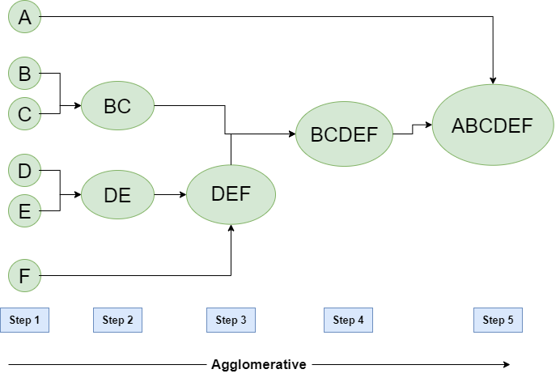
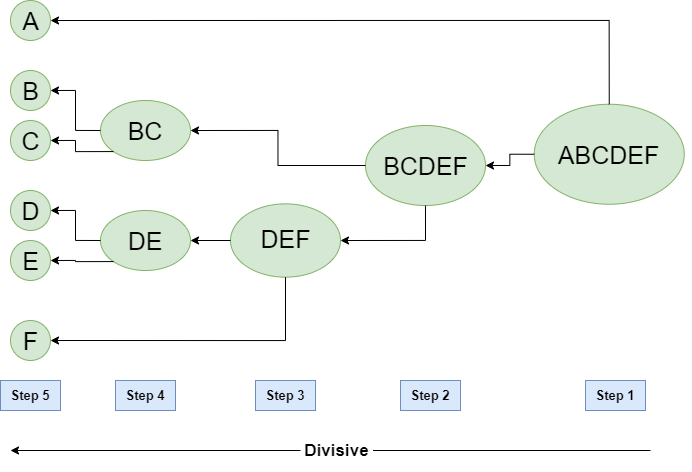

Hierarchical Clustering in Data Mining
Contents are taken from the Article “Hierarchical Clustering in Data Mining”
A *Hierarchical clustering* method works via grouping data into a tree of clusters. Hierarchical clustering begins by treating every data point as a separate cluster. Then, it repeatedly executes the subsequent steps:
- Identify the 2 clusters which can be closest together, and
- Merge the 2 maximum comparable clusters. We need to continue these steps until all the clusters are merged together.
In Hierarchical Clustering, the aim is to produce a hierarchical series of nested clusters. A diagram called *Dendrogram* (A Dendrogram is a tree-like diagram that statistics the sequences of merges or splits) graphically represents this hierarchy and is an inverted tree that describes the order in which factors are merged (bottom-up view) or clusters are broken up (top-down view).
What is Hierarchical Clustering?
Hierarchical clustering is a method of cluster analysis in data mining that creates a hierarchical representation of the clusters in a dataset. The method starts by treating each data point as a separate cluster and then iteratively combines the closest clusters until a stopping criterion is reached. The result of hierarchical clustering is a tree-like structure, called a dendrogram, which illustrates the hierarchical relationships among the clusters.
*Hierarchical clustering has several advantages over other clustering methods*
- The ability to handle non-convex clusters and clusters of different sizes and densities.
- The ability to handle missing data and noisy data.
- The ability to reveal the hierarchical structure of the data, which can be useful for understanding the relationships among the clusters.
*Drawbacks of Hierarchical Clustering*
- The need for a criterion to stop the clustering process and determine the final number of clusters.
- The computational cost and memory requirements of the method can be high, especially for large datasets.
- The results can be sensitive to the initial conditions, linkage criterion, and distance metric used. In summary, Hierarchical clustering is a method of data mining that groups similar data points into clusters by creating a hierarchical structure of the clusters.
- This method can handle different types of data and reveal the relationships among the clusters. However, it can have high computational cost and results can be sensitive to some conditions.
Types of Hierarchical Clustering
Basically, there are two types of hierarchical Clustering:
- Agglomerative Clustering
- Divisive clustering
1. Agglomerative Clustering
Initially consider every data point as an *individual* Cluster and at every step, merge the nearest pairs of the cluster. (It is a bottom-up method). At first, every dataset is considered an individual entity or cluster. At every iteration, the clusters merge with different clusters until one cluster is formed.
The algorithm for Agglomerative Hierarchical Clustering is:
- Calculate the similarity of one cluster with all the other clusters (calculate proximity matrix)
- Consider every data point as an individual cluster
- Merge the clusters which are highly similar or close to each other.
- Recalculate the proximity matrix for each cluster
- Repeat Steps 3 and 4 until only a single cluster remains.
Let’s see the graphical representation of this algorithm using a dendrogram.
*Note:* This is just a demonstration of how the actual algorithm works no calculation has been performed below all the proximity among the clusters is assumed.
Let’s say we have six data points *A, B, C, D, E, and F*.

Agglomerative Hierarchical clustering
- *Step-1:* Consider each alphabet as a single cluster and calculate the distance of one cluster from all the other clusters.
- *Step-2:* In the second step comparable clusters are merged together to form a single cluster. Let’s say cluster (B) and cluster (C) are very similar to each other therefore we merge them in the second step similarly to cluster (D) and (E) and at last, we get the clusters [(A), (BC), (DE), (F)]
- *Step-3:* We recalculate the proximity according to the algorithm and merge the two nearest clusters([(DE), (F)]) together to form new clusters as [(A), (BC), (DEF)]
- *Step-4:* Repeating the same process; The clusters DEF and BC are comparable and merged together to form a new cluster. We’re now left with clusters [(A), (BCDEF)].
- *Step-5:* At last, the two remaining clusters are merged together to form a single cluster [(ABCDEF)].
2. Divisive Hierarchical clustering
We can say that Divisive Hierarchical clustering is precisely the *opposite* of Agglomerative Hierarchical clustering. In Divisive Hierarchical clustering, we take into account all of the data points as a single cluster and in every iteration, we separate the data points from the clusters which aren’t comparable. In the end, we are left with N clusters.

Divisive Hierarchical clustering